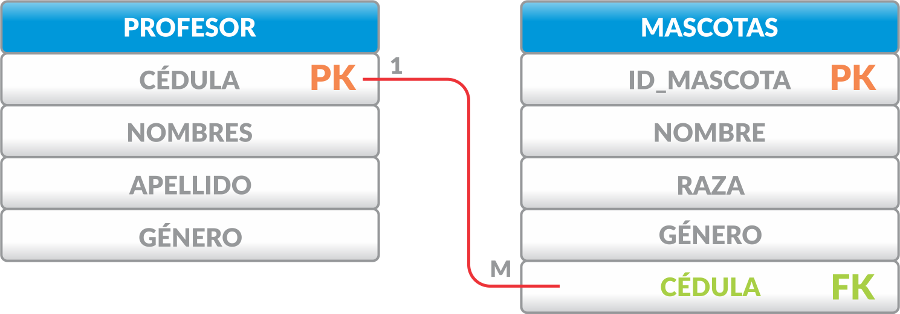
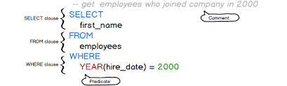
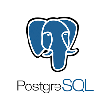
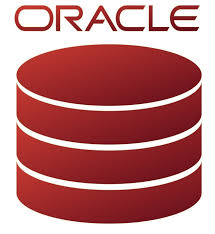

Introducción a las Bases de Datos Relacionales
Un recorrido por el mundo de las base de datos y su impacto en la tecnología.
Un recorrido por el mundo de las base de datos y su impacto en la tecnología.
Una base de datos relacional es un sistema de gestión de datos que permite almacenar, organizar y manipular información de manera eficiente. A diferencia de otros modelos de bases de datos, que pueden ser jerárquicos o en red, el modelo relacional utiliza una estructura tabular que facilita la comprensión y el manejo de los datos.
En una base de datos relacional, la información se organiza en tablas que contienen filas (o tuplas) y columnas (o atributos). Cada fila de una tabla representa un registro único, y cada columna corresponde a un tipo específico de dato. Por ejemplo, en una tabla de clientes, cada fila podría contener información sobre un cliente específico, mientras que las columnas podrían incluir el nombre, la dirección y el número de teléfono.
Una de las características más poderosas de las bases de datos relacionales es su capacidad para establecer relaciones entre diferentes tablas. Esto se logra mediante el uso de claves primarias y claves foráneas. Las claves primarias identifican de manera única cada registro dentro de una tabla, mientras que las claves foráneas permiten que una tabla se vincule a otra. Este enfoque no solo optimiza la organización de la información, sino que también garantiza la integridad y consistencia de los datos, evitando la duplicación y manteniendo la calidad de la información.
Para interactuar con una base de datos relacional, se utiliza el Lenguaje de Consulta Estructurada (SQL). Este lenguaje permite a los usuarios realizar una amplia gama de operaciones sobre los datos, desde consultas simples que recuperan información específica hasta comandos más complejos que pueden actualizar o eliminar registros. SQL es un estándar de la industria y se ha convertido en la herramienta esencial para la administración de bases de datos relacionales.
En 1970, el matemático y científico informático británico Edgar F. Codd, quien trabajaba en IBM, presentó el modelo relacional en un artículo titulado "A Relational Model of Data for Large Shared Data Banks". Este modelo revolucionó la forma en que los datos se almacenaban y gestionaban hasta ese momento, ofreciendo una estructura más organizada y eficiente para las bases de datos.
Antes de la llegada del modelo relacional, las bases de datos se gestionaban mediante modelos jerárquicos o de red. Estos enfoques organizaban los datos de manera menos flexible, dificultando las relaciones complejas entre conjuntos de datos. Además, estos modelos no permitían una fácil escalabilidad y eran propensos a la redundancia de información.
Los datos en una base de datos relacional se organizan en tablas, que constan de filas (o tuplas) y columnas (o atributos). Cada fila representa un registro único, mientras que las columnas almacenan los distintos atributos de estos registros. Esto facilita la estructuración y comprensión de los datos, permitiendo que cada tabla agrupe información relacionada, como una tabla de "Clientes" con columnas como "Nombre", "Dirección", "Teléfono".
Las relaciones entre tablas se establecen a través de claves primarias y claves foráneas. La clave primaria identifica de manera única cada fila de una tabla, mientras que la clave foránea permite vincular los datos de una tabla con otra, asegurando la integridad referencial. Este sistema evita la duplicación y asegura que los datos se mantengan consistentes.
El SQL es el lenguaje estándar para gestionar y consultar bases de datos relacionales. Con SQL, se pueden realizar operaciones como la inserción, actualización o eliminación de datos, así como consultas complejas para recuperar información mediante comandos como SELECT, JOIN, GROUP BY.
SQL (Structured Query Language) es el lenguaje estándar utilizado para gestionar y manipular bases de datos relacionales. Este lenguaje permite realizar desde operaciones simples hasta consultas complejas, lo que lo convierte en una herramienta esencial para cualquier sistema que utilice bases de datos relacionales.
SQL permite a los usuarios realizar varias operaciones sobre los datos almacenados en una base de datos. Algunas de las operaciones más comunes incluyen:
SELECT nombre, direccion
FROM Clientes
WHERE ciudad = 'Panama';
INSERT INTO Clientes (nombre, direccion, ciudad)
VALUES ('Juan Pérez', 'Calle 123', 'Panama');
UPDATE Clientes
SET direccion = 'Calle 456'
WHERE nombre = 'Juan Pérez';
DELETE FROM Clientes
WHERE nombre = 'Juan Pérez';
SELECT Pedidos.idPedido, Clientes.nombre, Productos.nombreProducto
FROM Pedidos
JOIN Clientes ON Pedidos.idCliente = Clientes.idCliente
JOIN Productos ON Pedidos.idProducto = Productos.idProducto
WHERE Clientes.ciudad = 'Panama';
| Característica | Relacional | NoSQL |
|---|---|---|
| Estructura | Tablas (Filas y Columnas) | Documentos, Clave-Valor, Grafos |
| Relaciones | Mediante Clave Foráneas | Relaciones Implícitas o Embebidas |
| Escalabilidad | Vertical | Horizontal |
| MySQL | PostgreSQL | Oracle Database | SQL Server |
|---|---|---|---|
 |
 |  |  |
| Sistema de gestión de bases de datos relacional de código abierto y ideal para aplicaciones web. | Sistema de gestión de bases de datos relacional avanzado y de código abierto. | Potente sistema de gestión de bases de datos relacional utilizado en entornos empresariales. | Sistema de gestión de bases de datos relacional de Microsoft, fácil de usar y con capacidades de análisis de datos avanzadas. |
Las bases de datos relacionales son ampliamente utilizadas en múltiples sectores, incluyendo:
| Comercio Electrónico | Bancos y Finanzas | Redes Sociales | Gestión de Recursos Humanos |
|---|---|---|---|
| Gestión de catálogos de productos, procesamiento de transacciones, control de inventarios y análisis del comportamiento del cliente en línea. | Registro de cuentas bancarias, transacciones financieras, gestión de préstamos y generación de informes para la toma de decisiones estratégicas. | Almacenamiento de perfiles de usuarios, publicaciones, interacciones sociales, gestión de grupos y envío de notificaciones sobre actividades relevantes. | Control de datos de empleados, seguimiento de asistencia, gestión de formación, procesos de contratación y evaluaciones de desempeño laboral. |